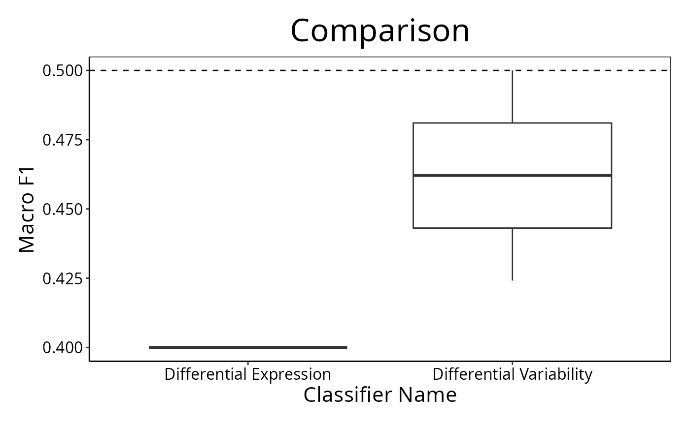

Plot Performance Measures for Various Classifications
performancePlot.RdDraws a graphical summary of a particular performance measure for a list of classifications
Usage
# S4 method for ClassifyResult
performancePlot(results, ...)
# S4 method for list
performancePlot(
results,
metric = "auto",
characteristicsList = list(x = "auto"),
aggregate = character(),
coloursList = list(),
orderingList = list(),
densityStyle = c("box", "violin"),
yLimits = NULL,
fontSizes = c(24, 16, 12, 12),
title = NULL,
margin = grid::unit(c(1, 1, 1, 1), "lines"),
rotate90 = FALSE,
showLegend = TRUE
)Arguments
- results
A list of
ClassifyResultobjects.- ...
Not used by end user.
- metric
Default:
"auto". The name of the performance measure or "auto". If the results are classification then balanced accuracy will be displayed. Otherwise, the results would be survival risk predictions and then C-index will be displayed. This is one of the names printed in the Performance Measures field when aClassifyResultobject is printed, or if none are stored, the performance metric will be calculated automatically.- characteristicsList
A named list of characteristics. Each element's name must be one of
"x","row","column","fillColour", or"fillLine". The value of each element must be a characteristic name, as stored in the"characteristic"column of the results' characteristics table. Only"x"is mandatory. It is"auto"by default, which will identify a characteristic that has a unique value for each element ofresults.- aggregate
A character vector of the levels of
characteristicsList['x']to aggregate to a single number by taking the mean. This is particularly meaningful when the cross-validation is leave-k-out, when k is small.- coloursList
A named list of plot aspects and colours for the aspects. No elements are mandatory. If specified, each list element's name must be either
"fillColours"or"lineColours". If a characteristic is associated to fill or line bycharacteristicsListbut this list is empty, a palette of colours will be automatically chosen.- orderingList
An optional named list. Any of the variables specified to
characteristicsListcan be the name of an element of this list and the value of the element is the order in which the factors should be presented in, in case alphabetical sorting is undesirable. Special values"performanceAscending"and"performanceDescending"indicate that the order of levels will be computed based on the median performance value of the characteristic being sorted into ascending or descending order.- densityStyle
Default: "box". Either
"violin"for violin plot or"box"for box plot. If cross-validation is not repeated, then a bar chart.- yLimits
The minimum and maximum value of the performance metric to plot.
- fontSizes
A vector of length 4. The first number is the size of the title. The second number is the size of the axes titles. The third number is the size of the axes values. The fourth number is the font size of the titles of grouped plots, if any are produced. In other words, when
rowVariableorcolumnVariableare notNULL.- title
An overall title for the plot.
- margin
The margin to have around the plot.
- rotate90
Logical. IF
TRUE, the plot is horizontal.- showLegend
If
TRUE, a legend is plotted next to the plot. If FALSE, it is hidden.
Details
If there are multiple values for a performance measure in a single result
object, it is plotted as a violin plot, unless aggregate is
TRUE, in which case the all predictions in a single result object are
considered simultaneously, so that only one performance number is
calculated, and a barchart is plotted.
Examples
predicted <- DataFrame(sample = sample(LETTERS[1:10], 80, replace = TRUE),
permutation = rep(1:2, each = 40),
class = factor(rep(c("Healthy", "Cancer"), 40)))
actual <- factor(rep(c("Healthy", "Cancer"), each = 5))
result1 <- ClassifyResult(DataFrame(characteristic = c("Data Set", "Selection Name", "Classifier Name",
"Cross-validation"),
value = c("Example", "t-test", "Differential Expression", "2 Permutations, 2 Folds")),
LETTERS[1:10], paste("Gene", 1:100), list(paste("Gene", 1:100), paste("Gene", c(10:1, 11:100)), paste("Gene", 1:100), paste("Gene", 1:100)),
list(paste("Gene", 1:3), paste("Gene", c(2, 5, 6)), paste("Gene", 1:4), paste("Gene", 5:8)),
list(function(oracle){}), NULL, predicted, actual)
result1 <- calcCVperformance(result1, "Macro F1")
predicted <- DataFrame(sample = sample(LETTERS[1:10], 80, replace = TRUE),
permutation = rep(1:2, each = 40),
class = factor(rep(c("Healthy", "Cancer"), 40)))
result2 <- ClassifyResult(DataFrame(characteristic = c("Data Set", "Selection Name", "Classifier Name",
"Cross-validation"),
value = c("Example", "Bartlett Test", "Differential Variability", "2 Permutations, 2 Folds")),
LETTERS[1:10], paste("Gene", 1:100), list(paste("Gene", 1:100), paste("Gene", c(10:1, 11:100)), paste("Gene", 1:100), paste("Gene", 1:100)),
list(c(1:3), c(4:6), c(1, 6, 7, 9), c(5:8)),
list(function(oracle){}), NULL, predicted, actual)
result2 <- calcCVperformance(result2, "Macro F1")
performancePlot(list(result1, result2), metric = "Macro F1",
title = "Comparison")
